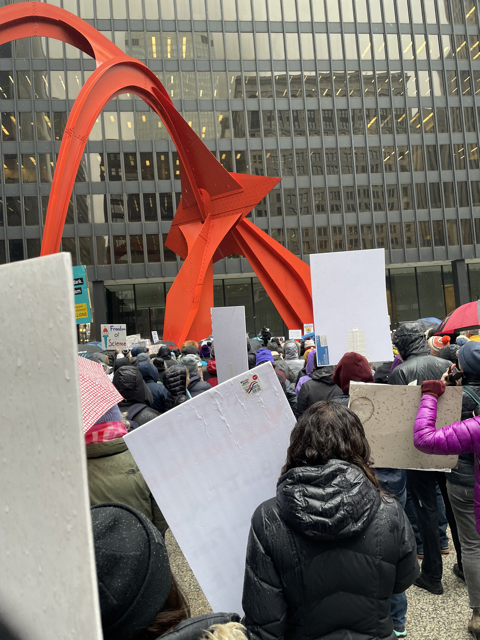
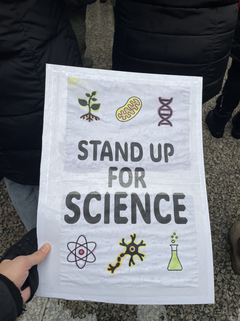

Standing up for science
Today I attended the Stand Up for Science protest in Chicago! The rally was part of a nationwide protest against the Trump administration’s science funding cuts. The major policy goals were to end censorship of science, secure federal science funding, and protect diversity and inclusion programs. It got local and national news coverage!


I was really excited to go and brought my own sign! It was my second protest ever. (My first one was the “Climate Can’t Wait” rally in Pittsburgh last month.)
As a young scientist, I’m pretty uncertain about my career prospects right now. Even if the NIH funding cuts are reversed or a new administration restores science funding in four years, plenty of damage has already been done. It may take some time for scientific agencies and institutions to recover.
I’m proud to be able to stand up for scientific research– not just for me, but for everyone who relies on vaccines, medicines, clean water, and all the other innumerable good things that come from federal science funding. Other than attending protests, spreading the word, and calling elected officials, I’ll keep following my own dream of being a scientist and hope that better times are to come.